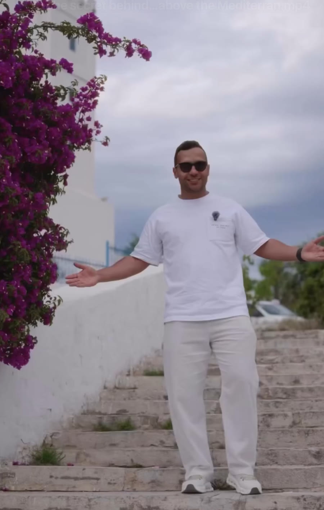

9:16 / Social film
The Blue Story
A place-led destination story through the eyes of a visitor.
A personal route, not a list of landmarks.
01 / The campaign
Make the audience
look again.
Turn a familiar destination into a story with enough intimacy and movement to make the audience look again.
Let discovery lead. The place reveals itself through a personal route rather than a catalogue of familiar landmarks.
02 / The direction
Discovery
leads.
The camera stays close to the journey, using blue-and-white architecture, pauses, sea light, and small human details to build a sense of place.
- 01Story route
- 02Location study
- 03Production
- 04Long-form edit
03 / Outcome
A familiar place,
personally seen.
The final destination film and story edit use rhythm, small encounters, and architectural detail to make a well-known place feel lived rather than advertised.
The first gesture
LET'S MAKESOMETHING FELT.